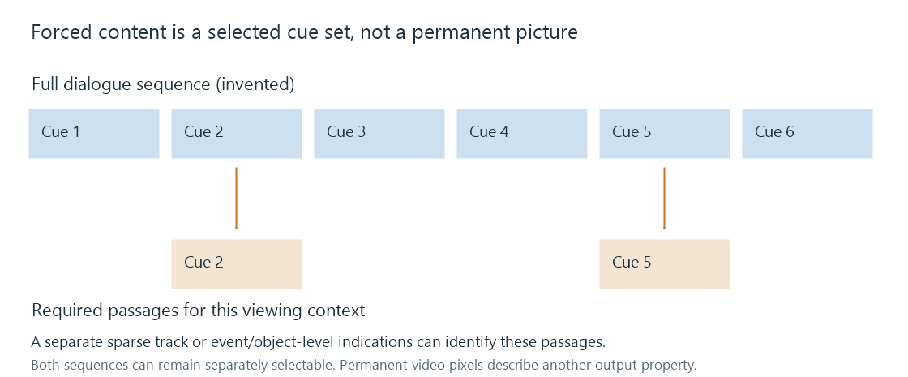

Forced subtitles
Forced subtitle metadata identifies selected content intended to be shown in a viewing context and is distinct from permanent subtitle pixels.
A movie can contain a short passage in another language, a written sign or another piece of information needed by its intended viewers. A forced subtitle presentation identifies the selected text needed in that viewing context, even when the viewer does not normally enable a full subtitle track.
“Forced” describes selection intent or signaling. It does not mean that the words have been permanently encoded into the video picture.
The required passages can be stored in two ways
| Representation | Where the selection is expressed |
|---|---|
| A separate sparse track | The track contains only the intended passages and can carry a forced designation |
| A fuller track with marked events/objects | Individual parts identify forced content through the applicable format |
| Permanent on-screen translation | The text is already in the video pixels; no forced-track choice removes it |
PGS can mark composition objects for forced display. A container can mark a track. Those operate at different levels: an unflagged full track can still contain selected forced objects, while a separately authored track can contain only the required passages.

The viewing context matters
Consider an English-language film with three foreign lines. Its English forced presentation can translate those three lines for an English-speaking audience. A Spanish full subtitle track can translate the complete film.
Selecting the Spanish full track is not the same content decision as selecting the English sparse track. The audio language, viewer language and subtitle policy determine the intended choice.
A forced label does not inspect the words to confirm that the resource contains only three passages. If a full-dialogue file is labeled as forced, a forced-only policy can end up displaying the whole film's dialogue.
Identification and presentation are separate
Emby's naming rules allow external resources to be identified as forced. Its subtitle preferences include a forced-only mode. The metadata identifies the intended role; the selected format and route still determine how those passages are rendered.
A route incorporating selected text into video produces permanent pixels in that output version. It can begin with a forced track, a full track or another subtitle source. The forcing designation and that processing result remain separate properties.